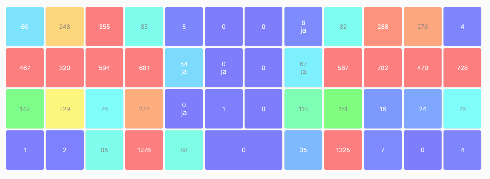
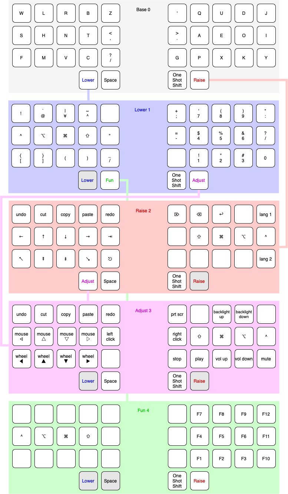

gilgamesh.one
Table of Contents
gilgamesh.one
An exploration into computer inputs and ergonomics
Ergonomics
I began this journey into ergonomics and computer inputs when I experienced discomfort while typing. As a writer, I experienced some discomfort after long sessions of typing that lasted around over three hours. I noticed particularly pain in my left hand after these long sessions. I also experienced discomfort in my litter finger on my left hand after long editing sessions. I think this is a sensation that many will experience after using a computer for some time, as this is the digit primarily responsible for holding down modifier keys, such as control, so as to input commands into the computer rather than text.
The problems with QWERTY
So, the first thing that I sought to address was my keyboard layout. I grew up typing on a QWERTY layout simply as it was the standard in the country I grew up in. After very little research, I learnt that the layout has its beginnings in 1878 for use on typewriters and I thought that it was unlikely to be most optimal for my use case for input into a computer and mainly for modern English and using the Web. One other major issues that struck me was that the home row was clearly poorly designed. Keyboards often have homing keys, keys with small bumps on, to help the typist orient themselves to the home row, but I noticed that the home row on QWERTY also includes the semicolon ;. While this character may be common in certain programming languages, it is fairly uncommon in modern English. Even as a writer myself, I often have to look up the grammpatical rules that govern its use in prose. Also, if one takes a rudimentary glance at the QWERTY layout, there seems to be little reason for the placement of the vowels, AEIOU. Only one is situated on the home row. It seemed obvious to me that vowel letters must be typed often as they are required in nearly every English word. Even a very common English word like ‘the’ requires moving ones fingers away from the home row on QWERTY.
Alternative ergonomic layouts
Very soon after, I stumbled upon a famous pioneer in keyboard layout ergonomics, Dvorak, and the layout with his namesake. I began to attempt to learn this layout for a short while - an exercise that it fraught with frustration as one attempts to reprogram the muscle memory one has learnt of the mental map of the keyboard. This keyboard addresses some of my previous concerns on vowel placement, but I still did wonder if it was best for my use case. It would take a significant amount of mental effort to learn a new layout and I wanted to be sure I was making the right decision. As the Dvorak layout was created circa 1933, I still wondered it if suited modern English and was the most efficient.
This led me to learn of many of the newer layouts such as Carpalx iterations, Colemak, and Workman. I came across the Carpalx project first and its analytical methodology intrigued me. I found it interesting that these endeavours to optimise keyboard layouts often aimed to keep Z, X, C, and V in their original QWERTY locations for the ease of use of copy and paste shortcuts. I decided that I would go fully into optimising my layout and that I had no particular attachment to copy and paste shortcuts as I thought they could just be relearnt - as all other shortcuts would have to be.
Alpha layout
It was at this stage that I came across the Halmak layout. It was the product of a research project into the most optimal positions for letters on a keyboard layout in terms of reducing finger travel for keyboard use in modern web-based English. It resulted in nearly every letter moving and it fit the bill for me completely. It even moved punctuation towards the centre of the keyboard resulting in a faux split keyboard. I decided that I would attempt to learn Halmak but that I would learn on a new physical keyboard too, in the hopes that I may retain some memory of QWERTY by associating it with my old keyboard, and associating Halmak with the new one. (Fortunately, this assumption worked as expected.)
Physical
I had an interest in trying a mechanical keyboard, especially as my work keyboard was an especially-aged rubber-dome-type that took significant effort to press some keys past the point of most resistance of the rubber dome and actuate the key press. The first keyboards that caught my interest were split keyboards, allowing one to spread their hands out wide. Even a type of unique keyboard called a Dactyl Manuform particularly caught my eye as it included a concave key well with a convex thumb cluster. This seemed to match how I imagined my hand would prefer to move, but these types of keyboards often require the technical knowledge to build, wire and solder the keyboard by one’s self. As I needed to travel often for work and work on a variety of computers I opted for the Planck EZ from ZSA. It is a small single unit making it easy to travel with, and is based on QMK firmware. This means that any changes I make to the layout will be recorded on the keyboard itself and would work on any computer with the same language settings. It was difficult to choose a unibody keyboard over a split keyboard. It only takes a few seconds to experiment with hand placement on one’s desk to see that one’s hands are far more comfortable at shoulder width. (This desire for a split keyboard remains unfulfilled.)
QMK
The QMK firmware is incredible and offers many excellent options that I do not take advantage of. And with ZSA’s software, flashing your layout to the keyboard is quick and easy. Because is so easy to program, you are able to iterate and change your layout as you put it to the test. Some excellent features of QMK are Space Cadet Shift (the left shift key outputs shift on hold and open parenthesis on tap, and vice versa for the right shift key), Capsword (which seems far more useful that caps lock), One Shot Shift (sends the shifted version of the next key press only, as seen in iOS keyboards) and there are many more.
The Planck
The Planck is a keyboard at 40% the size of a full size keyboard whose namesake is the famous mathematician Max Planck. It was created by Jack Humbert. You are able to retain full functionality of a 102-key keyboard by using layers. These work similar to how shift works on regular keyboards, or how you can access numbers and symbols on a smart phone keyboard by the appropriate ‘move to layer’ key. This not only saves space and reduces the cost of the keyboard, it offers many more advantages, such as being able to have a number keypad directly beneath your home row. It helps you move your hand around the keyboard less and so reduces fatigue. The Planck allows for nearly every key to be placed within two keys of the home row. I have since iterated on this design and created a layout where every key is only one key away from the home row.
Modifier keys
The layout I have designed by trial and error uses Halmak for placement of the alpha (alphabet) keys. Aside from the num pad (which I much prefer to a number row), I also began to move the modifier keys. These are typically placed surrounding the alpha keys (as they were developed later in the timeline of input technologies) but this places strain on the weakest of all digits, the little finger. Overuse of modifiers in such a position can lead to what has been called ‘emacs pinky’, (emacs being a text editor which heavily uses modifier presses.) The solution to this dilemma comes in the form of home row mods. As there are four modifier keys, shift, control, alt (option on macOS), and super (windows on Windows and command on macOS), they can very conveniently be placed on the four home row keys. This is a system used in the excellent Miryoku layout and explained in detail by Precondition. Access to home row mods can be done by setting a key, A, to input A on a keypress but super when held down. I could not become accustomed to the typing cadence that was needed for such a system, so I opted for a design used in Callum-style layouts where the modifiers are present on all other layers on the home row. It requires another keypress to activate the layer, but it seems far more responsive.
Ortholinear versus horizontal stagger
Another quirk of traditional keyboard layouts is that the alpha keys are staggered horizontally. I.e. Q is not directly above A. This seems to be a requirement in typewriter technology to leave space for the key lever but is obviously unnecessary in electronic keyboards. The Planck has an orthogonally linear design which I found makes it easier to learn and remember where the keys are and allows the fingers to move in more predictable motions (instead of up and to the left, they only need move up). This introduces one inefficiency in my layout in that the Halmak research for optimal positions was conducted on horizontal stagger keyboards. This inefficiency is particularly noticeable in the placement of the letter G. Instead, I would refer to the finger effort map introduced by Workman (as it was designed for ortholinear keyboards) when choosing symbol and number placement. I have decided to leave the alphas as they are due to the difficulty in learning new positions. It is seemingly by far much easier to learn a new layout for symbols and numbers, and only takes a day or two to become proficient.
Mechanical
The Planck EZ is a mechanical keyboard, meaning that it uses switches with springs rather than rubber domes to provide resistance to the keypress. I ordered my Planck EZ with Kaihl speed silver switches which are very light and thus not fatiguing, and it is a linear type, meaning that they key moves up and down without added function such as a bump (tactile) or a audile click (clicky). The board is hot swappable meaning that the switches are not soldered on and are very easy to change. There are numerous switches available, and so with a mechanical keyboard you are more likely to find a key switch that gives you just the right feel.
Typing style
It is worth noting that my original typing style on QWERTY is freestyle and my hands move to where I remember the keys are, and I do not use the ‘correct’ finger for the correct key. And I definitely do not use the correct modifier, by using alternate hands to press modifier and alpha chords. (Who uses right shift?!). So, as I was already taking on a fair endeavour by rearranging my alpha keys, I decided to learn proper touch typing style. I found Monkeytpe to be an incredibly helpful tool. It even allows you to emulate a different layout if you would like to try others. I also found it helpful to be fairly unforgiving with myself on incorrect keypresses. I would retype the whole word if I made a mistake during my practice to learn the patterns of the words. Here, I found accuracy to be far more important than speed. I recommend regular daily practice. (Something which I had never bothered to do before.)
Planck drawbacks
One downside of the Planck is that the upper most little finger keys (Q and P on QWERTY) are difficult to hit without moving one’s hand because of the short size of the pinky. Here it seems vertical stagger is most ergonomic. I think the Kyria has the best little finger stagger for a flat keyboard, or, alternatively, a Dactyl-like keyboard that has stagger in three dimensions.
Another drawback of the Planck is that the spacebar is designed to be struck by both thumbs (it is 2u in size). However, as I endeavour to reduce little finger use and much as possible, I needed to assign more keys to the thumbs, one of our strongest digits. So, next I created a faux split on the board, moving keys like backspace, return, escape, and tab, to thumb keys or other stronger digits. This assigning of more keys to the thumbs is a design element that can be seen in the Kinesis Advantage 2 and the Maltron, and modern DIY keyboards like the Dactyl and the Kyria.
Layout progression
Below is heat map of most used keys on an earlier iteration of my layout. The heat map was captured while typing mostly prose during work.  To see how this layout on the Planck progressed, you can see my earlier layouts on the ZSA configurator tool, Oryx. Halmak2.7, a layout inspired by the Miryoku layout, where finger travel is reduced and thumb use is increased. Halmak2.0, my original layout with few changes from the stock Planck layout. This would be most familar to a traditional keyboard user.
Right hand dominance
One major change I made while iterating on my layout was the placement of the layer keys for the number layer and the navigation layer. I am right handed so I prefer having the numpad on my right hands, accessed by my left thumb. But this is also true for my navigation layer. My navigation layer was inspired by Miryoku and has all arrow keys in a row. But with both requiring a dedicated left thumb key, one was always further away from the home thumb position and led to contortion and curling of the thumb. I bit the bullet and moved the nav layer to the left hand. One surprising benefit is that the right arrow is no longer on the right little finger home row key, it is on the left index finger home row key. This finger is much stronger and better suited to English (left-right language) computing. It is far more likely that you will move down and right through a document or a file system as the cursor usually begins at the top left. In suit, I placed the down arrow key on my left middle finger.
Current layout
This is my current layout. It uses only simple MO layer changes (which keeps it responsive) and only two thumb keys per hand. I think the ideal is somewhere between two and four thumb keys. 
Future optimisations
Optimisations that I have heard of but not opted for are ordering numbers according to use frequency, such as in the T-34 layout, rather than ascending or descending, and assigning the letter E to a thumb rather than a finger due to its vast use frequency in European languages. I think both have their merits but I am not interested in exploring them at this time. I would prefer to get more efficient with my current layout.
Next keyboard
The next keyboard that I would like to try would be a split keyboard, such as a Dactyl Manuform type, likely a Skeletyl, or a Kyria, or a low profile Ferris keyboard. I am also interested in removing the need to move my hand to the mouse and having a trackball either closer to my right hand or integrated into the keyboard such as in the Charybdis or the Os Eruditio setup.
Advice
My advice for those looking to optimise their keyboard use and try out new layouts, would be to iterate slowly. I think that 80% of the gains can be made from changing to Dvorak or Colemak (two layouts that are better supported than the more extreme Halmak and have a larger community of users). For alpha key layouts, basically anything is better than QWERTY - it is that terrible. Some great advice that I got from Paul Guerin was to chose the keyboard layout philosophy that you like the best, as you won’t realise what parts of a layout you dislike until you are heavily invested in learning it. Next, I think I would suggest a split keyboard and also incorporate more thumb use and home row mods. A keyboard like the Moonlander from ZSA would fit the bill and be easily bought and used by most people. If you are more adventurous, you could try buliding your own. Even if you use a traditional keyboard that is not programable, you can incorporate home row mods and layers via software instead of firmware.